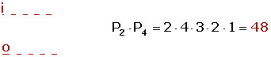
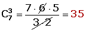
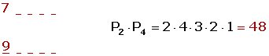
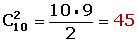
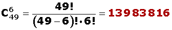
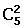
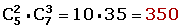

Ejercicios de combinatoria I
1¿De cuántas formas diferentes se pueden cubrir los puestos de presidente, vicepresidente y tesorero de un club de fútbol sabiendo que hay 12 posibles candidatos?
2Con las letras de la palabra libro, ¿cuántas ordenaciones distintas se pueden hacer que empiecen por vocal?
3¿De cuántas formas pueden mezclarse los siete colores del arco iris tomándolos de tres en tres?
4¿Cuántos números de cinco cifras distintas se pueden formar con las cifras impares? ¿Cuántos de ellos son mayores de 70.000?
5¿De cuántos partidos consta una liguilla formada por cuatro equipos?
6A una reunión asisten 10 personas y se intercambian saludos entre todos. ¿Cuántos saludos se han intercambiado?
7Con las cifras 1, 2 y 3, ¿cuántos números de cinco cifras pueden formarse? ¿Cuántos son pares?
8¿Cuántas apuestas de Lotería Primitiva de una columna han de rellenarse para asegurarse el acierto de los seis resultados, de 49?
9¿De cuántas formas pueden colocarse los 11 jugadores de un equipo de fútbol teniendo en cuenta que el portero no puede ocupar otra posición distinta de la portería?
10Con el punto y raya del sistema Morse, ¿cuántas señales distintas se pueden enviar, usando como máximo cuatro pulsaciones?
11Una mesa presidencial está formada por ocho personas, ¿de cuántas formas distintas se pueden sentar, si el presidente y el secretario siempre van juntos?
12¿Cuántas diagonales tiene un pentágono y cuántos triángulos se puede informar con sus vértices?
13Un grupo, compuesto por cinco hombres y siete mujeres, forma un comité de 2 hombres y 3 mujeres. De cuántas formas puede formarse, si:
1Puede pertenecer a él cualquier hombre o mujer.
2Una mujer determinada debe pertenecer al comité.
3Dos hombres determinados no pueden estar en el comité.
- 1
- 2
- 3
- 4
- 5
- 6
- 7
- 8
- 9
- 10
- 11
- 12
- 13
Ejercicio 1 resuelto
¿De cuántas formas diferentes se pueden cubrir los puestos de presidente, vicepresidente y tesorero de un club de fútbol sabiendo que hay 12 posibles candidatos?
No entran todos los elementos.
Sí importa el orden.
No se repiten los elementos.
Ejercicio 2 resuelto
Con las letras de la palabra libro, ¿cuántas ordenaciones distintas se pueden hacer que empiecen por vocal?
La palabra empieza por i u o seguida de las 4 letras restantes tomadas de 4 en 4.
Sí entran todos los elementos.
Sí importa el orden.
No se repiten los elementos.

Ejercicio 3 resuelto
¿De cuántas formas pueden mezclarse los siete colores del arco iris tomándolos de tres en tres?
No entran todos los elementos.
No importa el orden.
No se repiten los elementos.

Ejercicio 4 resuelto
¿Cuántos números de cinco cifras distintas se pueden formar con las cifras impares? ¿Cuántos de ellos son mayores de 70.000?
Sí entran todos los elementos.
Sí importa el orden.
No se repiten los elementos.
Si es impar sólo puede empezar por 7 u 9.

Ejercicio 5 resuelto
¿De cuántos partidos consta una liguilla formada por cuatro equipos?
No entran todos los elementos.
Sí importa el orden.
No se repiten los elementos.
Ejercicio 6 resuelto
A una reunión asisten 10 personas y se intercambian saludos entre todos. ¿Cuántos saludos se han intercambiado?
No entran todos los elementos.
No importa el orden.
No se repiten los elementos.

Ejercicio 7 resuelto
Con las cifras 1, 2 y 3, ¿cuántos números de cinco cifras pueden formarse? ¿Cuántos son pares?
Sí entran todos los elementos: 3 < 5
Sí importa el orden.
Sí se repiten los elementos.
Si el número es par tan sólo puede terminar en 2.
Ejercicio 8 resuelto
¿Cuántas apuestas de Lotería Primitiva de una columna han de rellenarse para asegurarse el acierto de los seis resultados, de 49?
No entran todos los elementos.
No importa el orden.
No se repiten los elementos.

Ejercicio 9 resuelto
¿De cuántas formas pueden colocarse los 11 jugadores de un equipo de fútbol teniendo en cuenta que el portero no puede ocupar otra posición distinta de la portería?
Disponemos de 10 jugadores que pueden ocupar 10 posiciones distintas.
Sí entran todos los elementos.
Sí importa el orden.
No se repiten los elementos.
Ejercicio 10 resuelto
Con el punto y raya del sistema Morse, ¿cuántas señales distintas se pueden enviar, usando como máximo cuatro pulsaciones?
No entran todos los elementos en un caso y sí entran en lo otros
Sí importa el orden.
Sí se repiten los elementos.
Ejercicio 11 resuelto
Una mesa presidencial está formada por ocho personas, ¿de cuántas formas distintas se pueden sentar, si el presidente y el secretario siempre van juntos?
Se forman dos grupos:
El primero de 2 personas.
El segundo sería considerado como un grupo de 7 personas. Basta pensar en el grupo formado por el presidente y el secretario como una única persona (pues siempre van juntos).
En los dos se cumple que:
Sí entran todos los elementos.
Sí importa el orden.
No se repiten los elementos.
Ejercicio 12 resuelto
¿Cuántas diagonales tiene un pentágono y cuántos triángulos se puede informar con sus vértices?
No entran todos los elementos.
No importa el orden.
No se repiten los elementos.
Son , a las que tenemos que restar los lados que determinan 5 rectas que no son diagonales.

Ejercicio 13 resuelto
Un grupo, compuesto por cinco hombres y siete mujeres, forma un comité de 2 hombres y 3 mujeres. De cuántas formas puede formarse, si:
Soluciones:1Puede pertenecer a él cualquier hombre o mujer.

2Una mujer determinada debe pertenecer al comité.
3Dos hombres determinados no pueden estar en el comité.
 Ejercicios
Ejercicios